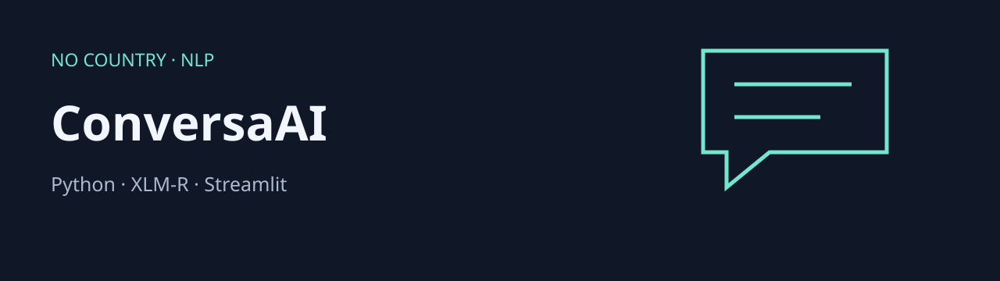

HENRY · ANALÍTICA DE CLIENTES
Cliente360
Preparación de datos, segmentación y visualización de clientes. Código, notebooks y seis pruebas automatizadas disponibles.
Revisar proyectoDODY DUEÑAS REMACHE · ECUADOR
Analista de datos / Data Scientist junior. Trabajo con Python, SQL y Power BI para transformar datos en análisis, dashboards y modelos que se puedan explicar.
Disponible para oportunidades junior · Guayaquil / remoto desde Ecuador
UNA SELECCIÓN PARA EMPEZAR
Análisis de clientes, datos industriales y lenguaje natural. Revisa el código y la evidencia de cada caso.
HENRY · ANALÍTICA DE CLIENTES
Preparación de datos, segmentación y visualización de clientes. Código, notebooks y seis pruebas automatizadas disponibles.
Revisar proyecto
PERSONAL · DATOS INDUSTRIALES
ETL, SQLite y visualización de 55 gases refrigerantes. Incluye 54 pruebas; las curvas estimadas requieren consultar sus fuentes.
Revisar proyecto
NO COUNTRY · PROYECTO EN EQUIPO
Pipeline NLP para sentimiento e intención en español y portugués. Conserva la autoría del equipo y distingue el score heurístico de churn.
Revisar proyectoTRABAJO APLICADO
Problema, enfoque y evidencia. Formación en Henry, simulaciones de No Country y proyectos personales.
13 proyectos visibles
No hay proyectos que coincidan. Prueba otra búsqueda.
Los proyectos de equipo conservan su atribución. Las métricas publicadas en repositorios requieren su contexto de evaluación; aquí no se presentan como resultados comerciales.
EXPLORA UNA MUESTRA REAL
Vista web de los agregados del proyecto Power BI. Cambia el sector o la ubicación para comparar el comportamiento mensual.
| Mes | Transacciones | Valor agregado |
|---|
Fuente: CSV proporcionados por el autor. Moneda no especificada. Value / Transaction_count es una razón agregada; su interpretación como ticket depende del significado del campo Value. No son datos financieros de una entidad verificada.
MI ENFOQUE
Me interesa comenzar mi carrera en análisis y ciencia de datos. Mi formación y mis proyectos combinan limpieza de datos, modelado relacional, visualización y aprendizaje automático.
Busco oportunidades junior en Guayaquil o remotas desde Ecuador. Valoro los problemas concretos, la documentación clara y el trabajo en equipo.
Python, pandas, SQL, análisis exploratorio y comprobación de calidad.
Power BI, Power Query, DAX y modelos dimensionales.
scikit-learn, XGBoost y evaluación de modelos. Proyectos con Streamlit y Supabase.
CONVERSEMOS
Guayaquil · Remoto desde Ecuador · Perfil junior